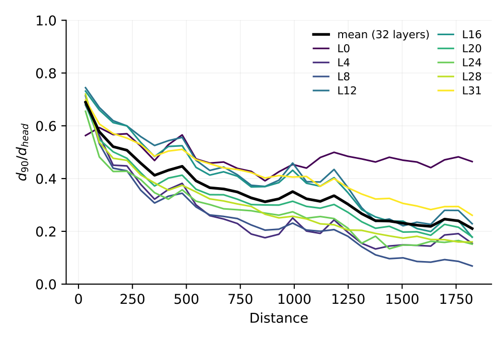
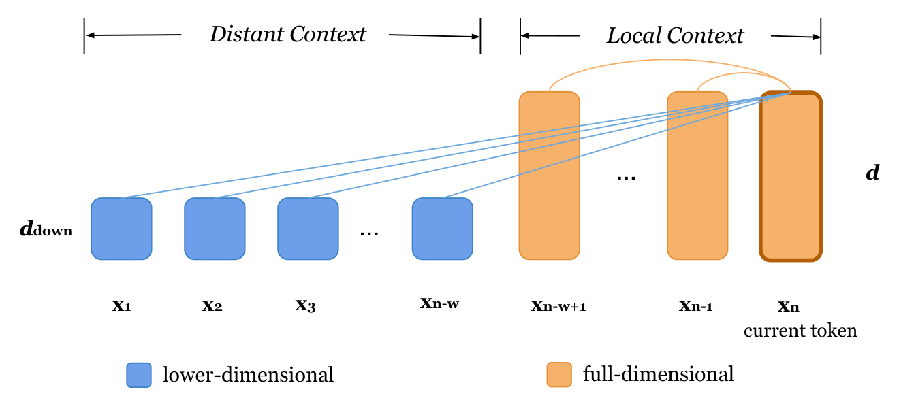
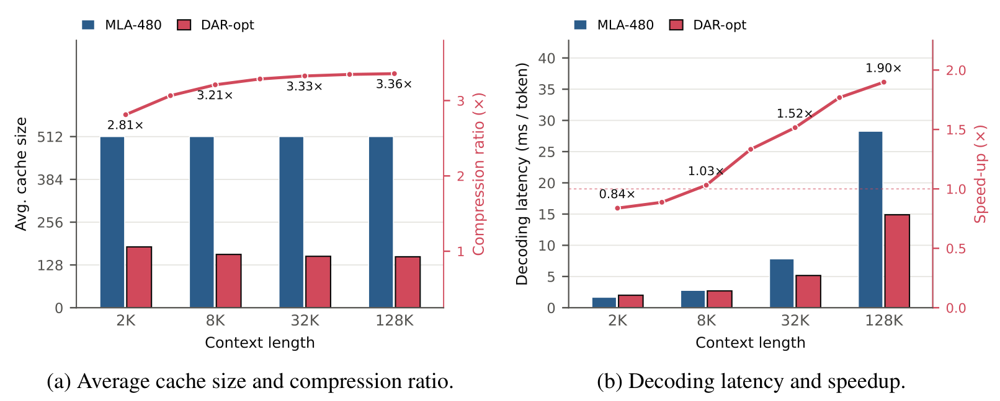

Dual Dimensionality for
Local and Global Attention
University of California, Santa Barbara
Abstract
Decoder-only Transformers compute attention over the KV cache of preceding tokens. Keys and Values are typically represented with the same dimensionality, regardless of their distance from the prediction target. In natural language, however, the next word is most strongly influenced by the immediately preceding tokens. We hypothesize that local and distant tokens impose asymmetric demands on representational capacity: local tokens are more critical for predicting immediate outputs and thus require richer representations, whereas distant tokens primarily serve as long-range memory, for which lower-dimensional representations may suffice. We formalize this idea as Distance-Adaptive Representation (DAR), which preserves full-dimensional representations within a local context window while assigning reduced-dimensional representations (e.g. 1/2 or 1/4 of the original dimensionality) to tokens beyond that window. Across multiple pretraining scales (70M to 410M parameters), as well as continued supervised fine-tuning on a 1B-scale model, this approach closely matches the performance of full-dimensional baselines. In contrast, uniformly reducing dimensionality across all token positions leads to worse performance. These results challenge the common assumption that key and value dimensionality should be uniform across token positions. We further develop an efficient realization of DAR that achieves model quality comparable to the MLA baseline while reducing the average KV-cache size by 68.8% at 8K context and achieving up to a 1.9× decoding speedup at 128K context on the evaluated models. Our findings suggest a new direction for designing attention architectures that allocate representational capacity according to token distance to reduce KV-cache during inference.
From Observation to Hypothesis

We measure the effective dimensionality of attention-weighted value aggregates at different distances from queries. We compute the attention-weighted value aggregate for query i and bin b:
For each distance bin, we collect mi(b) across queries and apply PCA separately for each layer and attention head. We define d90 as the smallest number of principal components explaining 90% of the variance.
The normalized effective dimensionality, d90/dhead, generally decreases with distance: variation in contributions from distant context is concentrated in fewer directions. This motivates our hypothesis about representational capacity.
We hypothesize that local and distant tokens impose asymmetric demands on representational capacity: local tokens are more critical for predicting immediate outputs and thus require richer representations, whereas distant tokens primarily serve as long-range memory, for which lower-dimensional representations may suffice.
Distance-Adaptive Representation
We propose Distance-Adaptive Representation (DAR): allocating representational capacity in attention according to token distance from the prediction target.
To validate the hypothesis, we implement a two-regime partition following DAR: full dimensionality is assigned to the local context, while a lower dimensionality is used for the distant context. The current token attends to all preceding tokens.

Key Results
Hypothesis Validation
Pretraining on Pythia
Reducing distant-token dimensionality to one quarter of the model dimension closely matches full-dimensional perplexity across the evaluated scales. Applying the same reduction uniformly performs worse.
| Model | Full dimension | Uniform reduction | DAR |
|---|---|---|---|
| Pythia-70M | 100.00 | 103.52 | 99.12 |
| Pythia-160M | 100.00 | 102.26 | 99.30 |
| Pythia-410M | 100.00 | 102.74 | 100.83 |
Paper Table 2. Local window: 128 tokens; distant dimension: d/4. Uniform reduction uses d/4 at every position. Per-dataset perplexity ratios are averaged over FineWeb-Edu, C4, and WikiText-103.
Efficient Realization: DAR-opt
We further explore an efficient realization of DAR. Following the MLA approach, DAR-opt uses a higher-dimensional content latent for local tokens and a lower-dimensional content latent for distant tokens, with rotary position information stored separately. Once a token leaves the local window, its larger local latent can be discarded.
At the Pythia-70M scale, DAR-opt matches the quality of a high-latent MLA baseline with a smaller average cache. It also outperforms uniform MLA at a matched cache budget.
| Method | Local / distant latent | Avg. cache dimensions | Relative perplexity |
|---|---|---|---|
| MLA-480 | 480 / 480 | 512 | 100.00 |
| MLA-150 | 150 / 150 | 182 | 101.40 |
| DAR-opt | 480 / 120 | 182 | 98.16 |
The smaller distant latent also enables faster long-context decoding: DAR-opt reduces average KV-cache size by 68.8% at 8K and achieves up to 1.90× speedup at 128K relative to MLA-480 in this setting. We also observe a consistent decoding-efficiency trend at the Pythia-160M scale.

Downstream Evaluation
SFT on OLMo-2-1B
We also evaluate downstream performance through continued supervised fine-tuning of OLMo-2-1B-SFT. DAR preserves performance with a quarter-dimensional distant representation; more aggressive reduction eventually degrades quality.
| Distant dim. | MMLU | HellaSwag | CSQA | GSM8K | MBPP | Multi-News | Avg. |
|---|---|---|---|---|---|---|---|
| 2048 (full) | 0.4044 | 0.6502 | 0.5315 | 0.4450 | 0.1320 | 0.1653 | 0.3881 |
| 512 (1/4) | 0.4051 | 0.6462 | 0.5304 | 0.4114 | 0.1440 | 0.1855 | 0.3871 |
| 256 (1/8) | 0.3978 | 0.6440 | 0.5228 | 0.4182 | 0.1180 | 0.1867 | 0.3812 |
| 128 (1/16) | 0.4067 | 0.6375 | 0.5209 | 0.4008 | 0.0780 | 0.1388 | 0.3638 |
| 64 (1/32) | 0.3891 | 0.6338 | 0.5012 | 0.3907 | 0.0300 | 0.1545 | 0.3499 |
Local window: 128 tokens.
Distillation on MLA-converted LLaMA-3-8B
We also evaluate distance-adaptive latent allocation using DAR-opt. To keep computational cost manageable, we distill from a fixed MLA-512 teacher converted from LLaMA-3-8B, rather than retraining the full 8B model. The goal is to assess how much teacher performance can be retained with a smaller KV cache, rather than to outperform the teacher.
DAR-opt remains slightly below MLA-512, but retains 97.30% of its average task-relative performance while reducing average cached dimensions per token from 576 to 336 at 8K context. At the same cache size, it preserves more teacher performance than uniform MLA-272.
| Method | Avg. cache dim. | MMLU | GSM8K | RULER@8K | Rel. (%) |
|---|---|---|---|---|---|
| MLA-512 (teacher) | 576 | 0.6221 | 0.7710 | 0.9234 | 100.00 |
| MLA-272 | 336 | 0.4826 | 0.6869 | 0.8191 | 85.13 |
| MLA-256 | 320 | 0.4673 | 0.6816 | 0.8175 | 84.02 |
| DAR-opt | 336 | 0.5993 | 0.7536 | 0.9031 | 97.30 |
Local window: 256 tokens. DAR-opt local / distant content latent dimensions: 512 / 256. Reference: the fixed MLA-512 teacher.